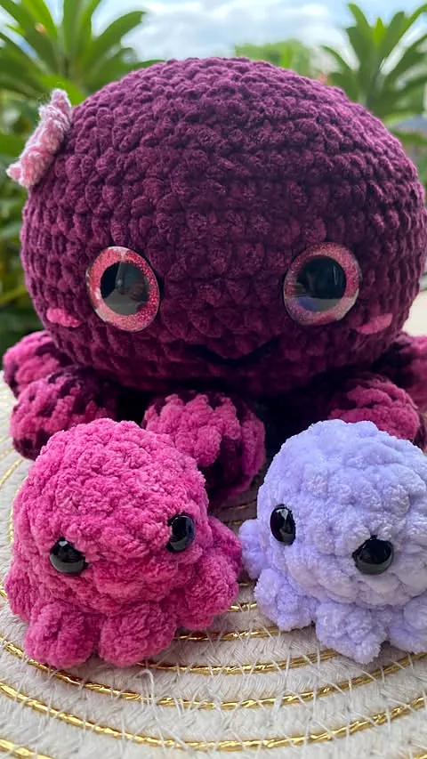
Février 2026
La pieuvre et ses bébés
« Une petite pieuvre de plus au crochet 🐙 qui cache ses bébés bien au chaud à l'intérieur 💕 »
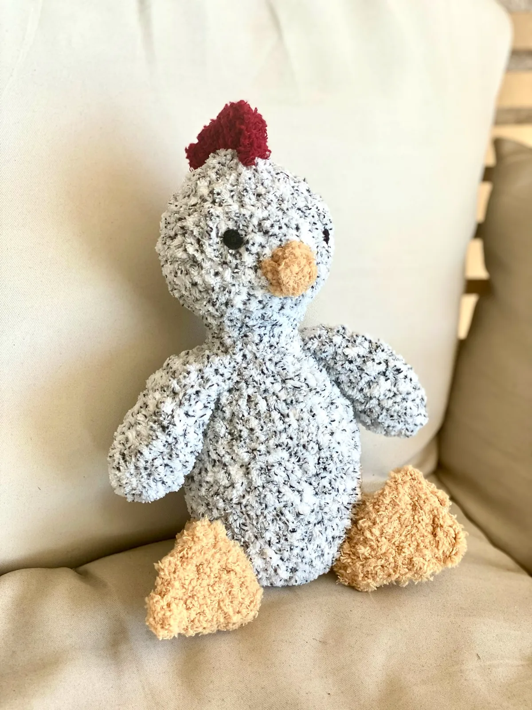
Créations fait-main au crochet · Le Tampon, La Réunion
Doudous, peluches et personnages en tout genre, porte-clés, sacs et fleurs : des créations fait-main au crochet 🧶 Commandes possibles, livraison sur La Réunion.
Le Tampon · 0692 41 99 98 · livraison sur toute l'île
L'atelier d'Anne-So
Au Tampon, Anne-So imagine et crochète à la main des doudous, des peluches et des personnages en tout genre, des porte-clés, des sacs et des fleurs. Chaque pièce naît maille après maille, avec des fils tout doux et des couleurs qui donnent le sourire.
« Une petite pieuvre de plus au crochet 🐙 … Chaque version me fait fondre un peu plus 🥹 »À propos de sa petite pieuvre, février 2026
Une envie, une idée de cadeau ? Les commandes sont possibles, et la livraison se fait sur toute La Réunion.
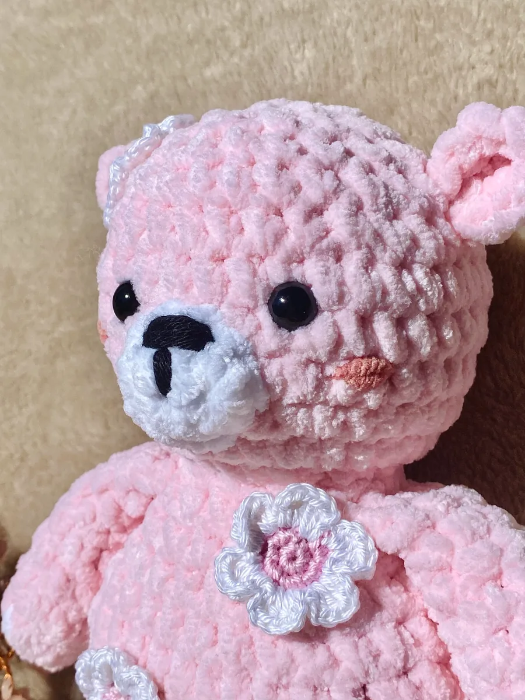
Les créations
Quelques créations publiées par L'instant crochet by AP, avec ses propres mots.

« Une petite pieuvre de plus au crochet 🐙 qui cache ses bébés bien au chaud à l'intérieur 💕 »
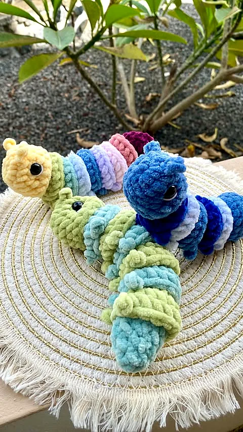
« Toutes douces, toutes moelleuses, et prêtes à ramper tout droit dans ton cœur 💛 » Entre pastel tendre et dégradé océan.
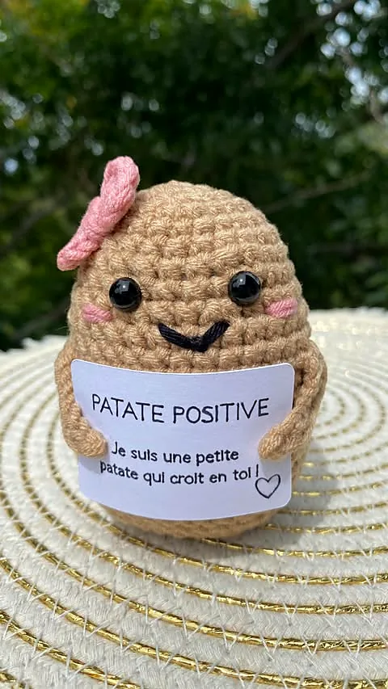
« Cette patate positive n'a qu'une mission 🥔💛 te rappeler que quelqu'un croit en toi. »
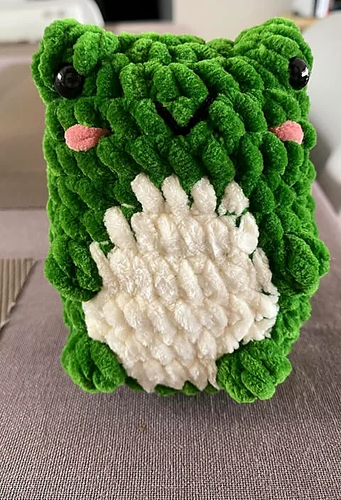
« Croa croa 💚 Qui craque pour cette petite grenouille au crochet ? Moi, j'avoue… complètement 😍 »
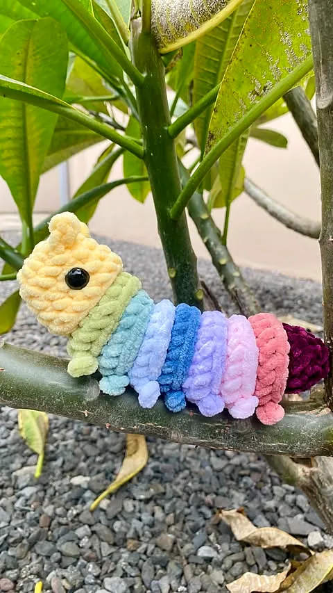
« Pas très rapide, mais clairement adorable 🫶🏼 » Sa mission : répandre un max de bonne humeur autour d'elle.
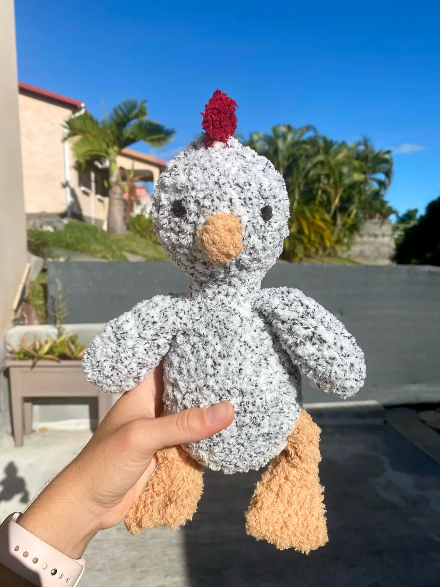
« Le doudou le plus doux de la Terre vient de rejoindre son nouveau foyer ☁️✨ »
← faites glisser pour tout voir →
Sacs, fleurs & porte-clés
Des sacs ronds en fil trapilho faits main, « parfaits pour ajouter une touche de texture et de couleur à toutes vos tenues ».
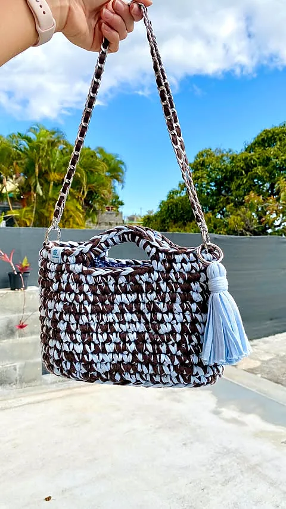
« Sa chaîne argentée apporte une touche chic, tandis que le pompon ajoute ce petit détail bohème qu'on adore 🤎 »
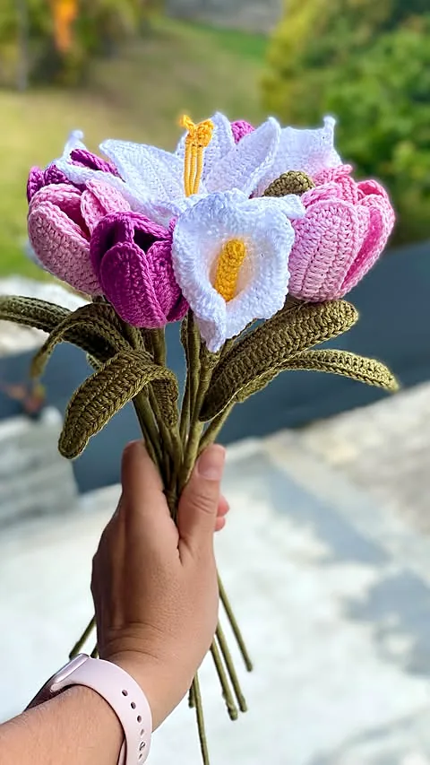
« Tant de pièces (une soixantaine) pour 11 fleurs 😅 Mais le rendu est superbe 🤩 » Pétales et feuilles doublés d'un fil de fer pour bien se tenir.
Et aussi des porte-clés au crochet, « originaux et pleins de caractère », à emporter partout 🔑
Commandes possibles
Doudou, peluche, porte-clés, sac ou bouquet : Anne-So vous répond avec plaisir.
Écrivez sur WhatsApp au 0692 41 99 98, ou en message privé sur Instagram et Facebook.
Racontez votre envie : la création qui vous fait craquer, pour vous ou pour offrir.
Votre pièce est crochetée à la main au Tampon, puis livrée sur La Réunion.
Offrir pour Noël
Ourson, coq, pieuvre ou chenille : un compagnon unique sous le sapin.
« Garde-la près de toi ou offre-la à quelqu'un qui en a besoin 🤍 »
Une pièce faite main qui accompagne celle ou celui qui la reçoit, longtemps.
Commandez tôt votre création des fêtes : elle sera crochetée avec amour, au Tampon.
Commander pour NoëlContact
Atelier · Le Tampon (97430), La Réunion
Livraison · sur La Réunion
Téléphone & WhatsApp · 0692 41 99 98
E-mail · anne-sophie.payet@live.fr
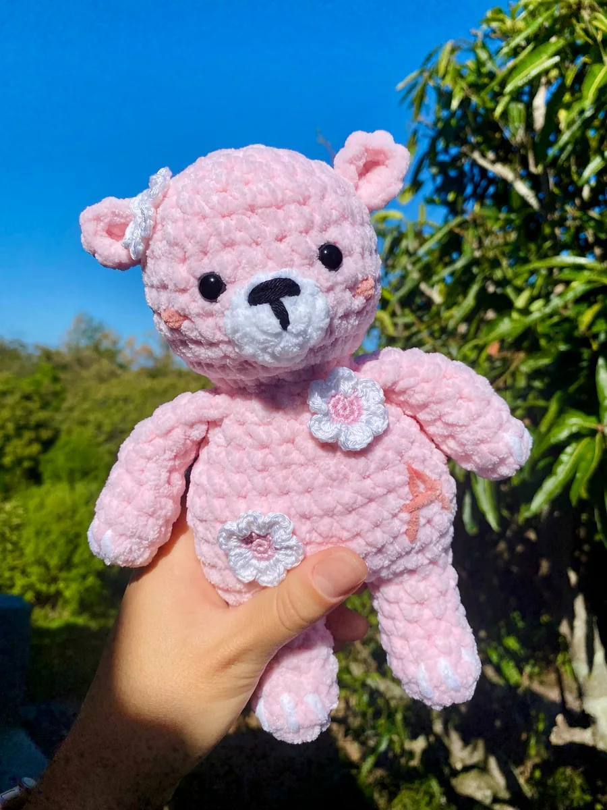